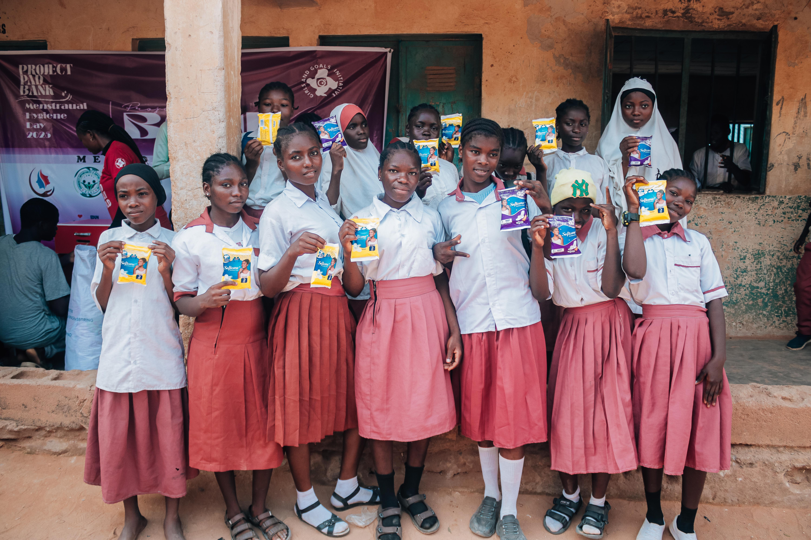
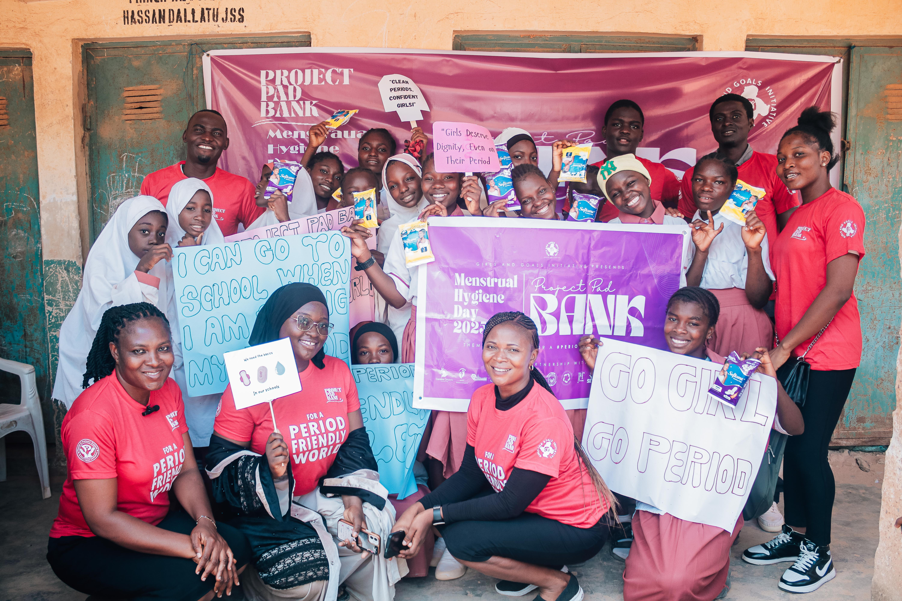
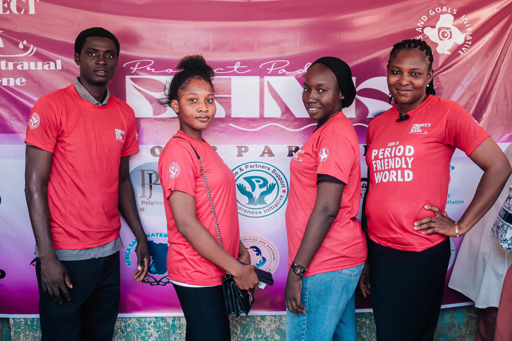
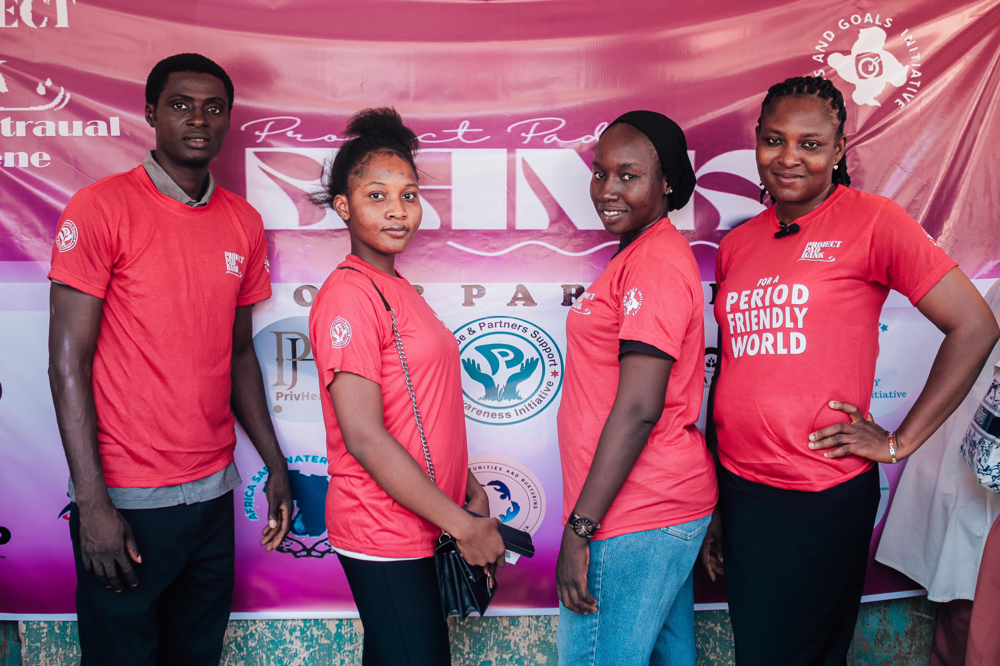
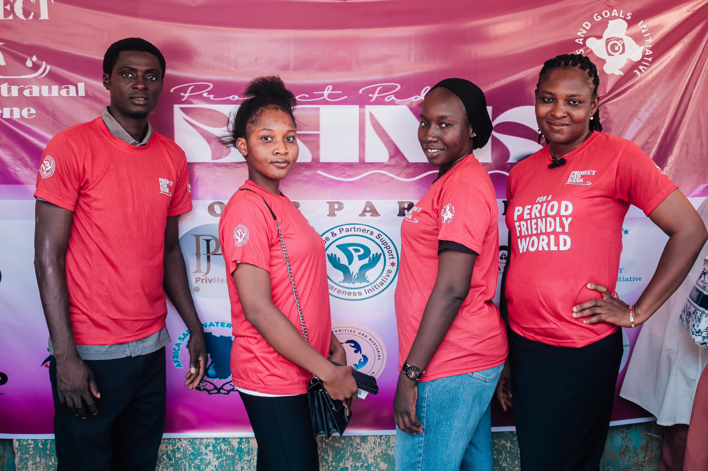
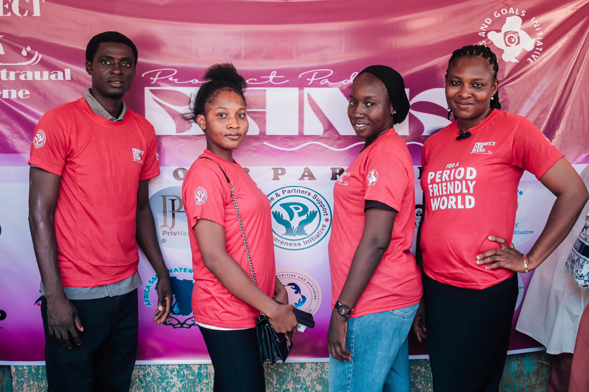

Photo Highlights


 




Empowering girls through menstrual health education
On Menstrual Hygiene Day, Phoebe and Partners Support and Awareness Initiative, in partnership with Girls and Goals Initiative and 18 other NGOs, successfully launched Project Pad Bank at Hassan Dallatu School in Suleja, Niger State. This initiative aimed to educate young girls on menstrual hygiene, provide sanitary pads, and introduce reusable pad-making techniques.
Project Pad Bank was a major success, equipping girls with the tools, knowledge, and products they need. It demonstrated the power of collaboration among Phoebe and Partners, Girls and Goals Initiative, and supporting NGOs to drive lasting social change in menstrual health.

Fatima (Age 14)
“Before this project, I missed school during my period. Now I attend confidently.”
Grace (Volunteer)
“Helping these girls changed my perspective on dignity and education.”
Amina (Age 13)
“I never thought someone cared this much. Thank you for making me feel seen.”
Your ₦2,500 can sponsor 1 girl with pads and menstrual education. Join us now.
Sponsor a Girl